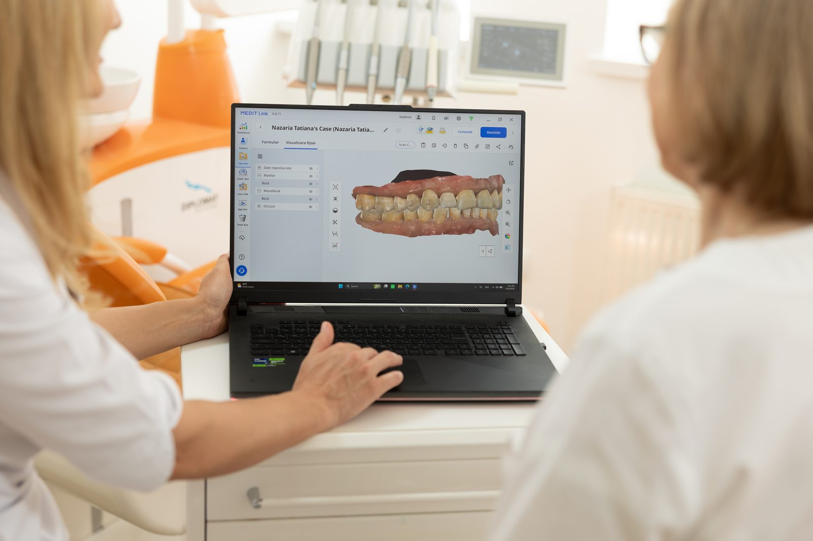
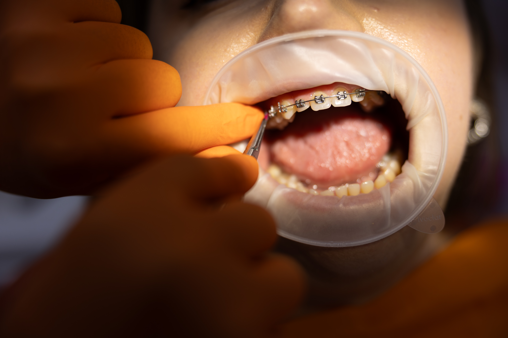
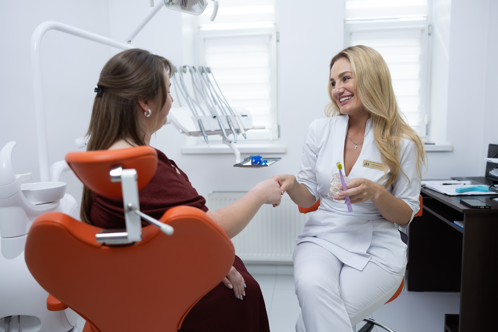
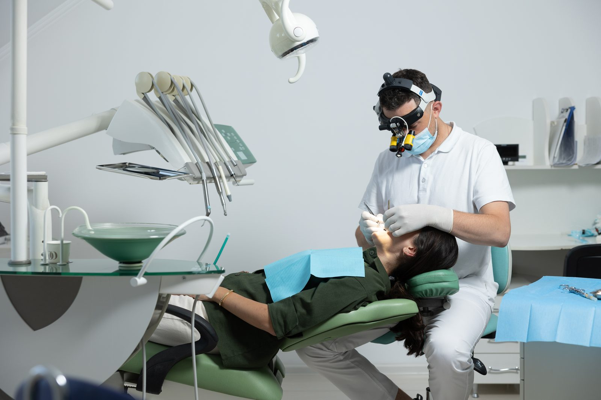

Stomatologie estetică
Zâmbetul perfect nu este doar o chestiune de estetică — este o sursă de încredere. Oferim fațete din porțelan și compozit, albire profesională cu sisteme certificate, bonding dentar și restaurări directe care imită perfect structura naturală a dintelui. Fiecare procedură este planificată cu ajutorul simulărilor digitale, astfel încât să știți exact cum va arăta rezultatul final înainte de a începe tratamentul.
Programare consultație
Implantologie
Implantul dentar este soluția definitivă pentru înlocuirea unui dinte lipsă — estetic, funcțional și durabil pe zeci de ani. Lucrăm exclusiv cu implanturi certificate de la producători europeni de top. Planificarea chirurgicală se realizează 3D, cu ghide chirurgicale imprimate digital, pentru precizie maximă și recuperare rapidă. Oferim și soluții All-on-4 pentru reabilitări complete.
Programare consultație
Ortodonție
O dantură aliniată corect nu este doar mai frumoasă — este mai ușor de igienizat și mai sănătoasă pe termen lung. Oferim atât brackeți metalici și ceramici, cât și alignere transparente pentru adulți care preferă discreția. Tratamentul este monitorizat lunar și adaptat progresului fiecărui pacient.
Programare consultație
Profilaxie dentară
Prevenția este cel mai rentabil tratament stomatologic. Detartrajul cu ultrasunete, procedura airflow și polisajul profesional îndepărtează depunerile calcifiate și colorația extrinsecă, prevenind cariile și boala parodontală. Recomandăm minimum două ședințe pe an, însoțite de instrucțiuni de igienă personalizate.
Programare consultație
Endodonție
Tratamentul de canal modern nu mai este sinonim cu durerea. Cu ajutorul microscopului endodontic și a sistemelor de instrumentare mecanică rotativă, realizăm tratamente de canal precise și rapid — salvând dinți care altfel ar fi pierduți. Rata noastră de succes în endodonție primară depășește 95%.
Programare consultație
Protetica dentară
Coroane, punți și proteze realizate din materiale premium — zirconiu, ceramică pură sau metal-ceramică — cu aspect complet natural. Colaborăm cu laboratoare dentare de înaltă precizie pentru rezultate estetice și funcționale de lungă durată. Protezele mobilizabile sunt o opțiune accesibilă și confortabilă pentru edentație parțială sau totală.
Programare consultație